<!DOCTYPE html>


<html lang="zh-CN">


<head>
  <meta charset="utf-8" />
    
  <meta name="description" content="The seeker of the world" />
  
  <meta name="viewport" content="width=device-width, initial-scale=1, maximum-scale=1" />
  <title>
    vc++6.0-常用控件2 |  Tianye Blog
  </title>
  <meta name="generator" content="hexo-theme-ayer">
  
  <link rel="shortcut icon" href="/favicon.ico" />
  
  
<link rel="stylesheet" href="/dist/main.css">

  
<link rel="stylesheet" href="/comm/remixicon.min.css">

  
<link rel="stylesheet" href="/css/custom.css">

  
  
<script src="/comm/pace.min.js"></script>

  
  

  
<script>
var _hmt = _hmt || [];
(function() {
	var hm = document.createElement("script");
	hm.src = "https://hm.baidu.com/hm.js?a65f4359920e6c4b5b2b6d0519751045";
	var s = document.getElementsByTagName("script")[0]; 
	s.parentNode.insertBefore(hm, s);
})();
</script>


<link rel="alternate" href="/atom.xml" title="Tianye Blog" type="application/atom+xml">
</head>

</html>

<body>
  <div id="app">
    
      
      <canvas width="1777" height="841"
        style="position: fixed; left: 0px; top: 0px; z-index: 99999; pointer-events: none;"></canvas>
      
    <main class="content on">
      <section class="outer">
  <article
  id="post-vc++6.0-常用控件2"
  class="article article-type-post"
  itemscope
  itemprop="blogPost"
  data-scroll-reveal
>
  <div class="article-inner">
    
    <header class="article-header">
       
<h1 class="article-title sea-center" style="border-left:0" itemprop="name">
  vc++6.0-常用控件2
</h1>
 

    </header>
     
    <div class="article-meta">
      <a href="/2016/03/vc++6.0-%E5%B8%B8%E7%94%A8%E6%8E%A7%E4%BB%B62/" class="article-date">
  <time datetime="2016-03-13T12:05:46.000Z" itemprop="datePublished">2016-03-13</time>
</a> 
  <div class="article-category">
    <a class="article-category-link" href="/categories/vc-6-0/">vc++6.0</a>
  </div>
  
<div class="word_count">
    <span class="post-time">
        <span class="post-meta-item-icon">
            <i class="ri-quill-pen-line"></i>
            <span class="post-meta-item-text"> 字数统计:</span>
            <span class="post-count">1.8k</span>
        </span>
    </span>

    <span class="post-time">
        &nbsp; | &nbsp;
        <span class="post-meta-item-icon">
            <i class="ri-book-open-line"></i>
            <span class="post-meta-item-text"> 阅读时长≈</span>
            <span class="post-count">7 分钟</span>
        </span>
    </span>
</div>
 
    </div>
      
    <div class="tocbot"></div>


  
    <div class="article-entry" itemprop="articleBody">
       
  <p><strong>实验目的：</strong> (1)设计一个如图3.1所示的“学生基本信息”对话框。 (2)在实验2的基础上，实现功能：在图2.1中的“课程信息”按钮下方添加一个“学生基本信息”按钮，单击该按钮，弹出“学生基本信息”对话框，单击“添加”按钮，学生基本信息显示在列表框中., (3)在CEx_CtrlsDlg对话框中添加一个滚动条和两个滑动条来调整对话框的背景颜色的3个分量：R（红色分量）、G（绿色分量）和B（蓝色分量），结果如图3.2所示。 </p>
<p>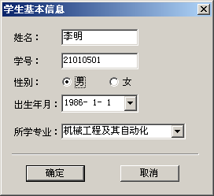</p>
<p>图3.1 “学生基本信息”对话框</p>
<p>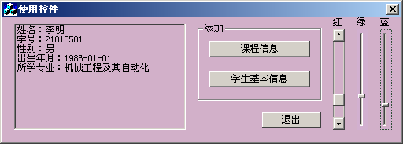</p>
<p>图3.2  设置对话框背景颜色</p>
<p><strong>实验仪器：</strong></p>
<p>电脑一台(CPU：Inter(R) Xeon(R) E3-1230 v3 @ 3.3GHz<br>内存：8.0GB   操作系统：Win8.1虚拟机xp 使用软件：Vc++ 6.0)</p>
<h5 id="1-．在实验3的工作文件夹中复制Ex-Ctrls-文件夹"><a href="#1-．在实验3的工作文件夹中复制Ex-Ctrls-文件夹" class="headerlink" title="1**．在实验3的工作文件夹中复制Ex_Ctrls**文件夹"></a><strong>1**</strong>．<strong>在实验</strong>3<strong>的工作文件夹中复制</strong>Ex_Ctrls**文件夹</h5><p>将本书实验2中的Ex_Ctrls文件夹复制到实验3的工作文件夹中。 </p>
<p>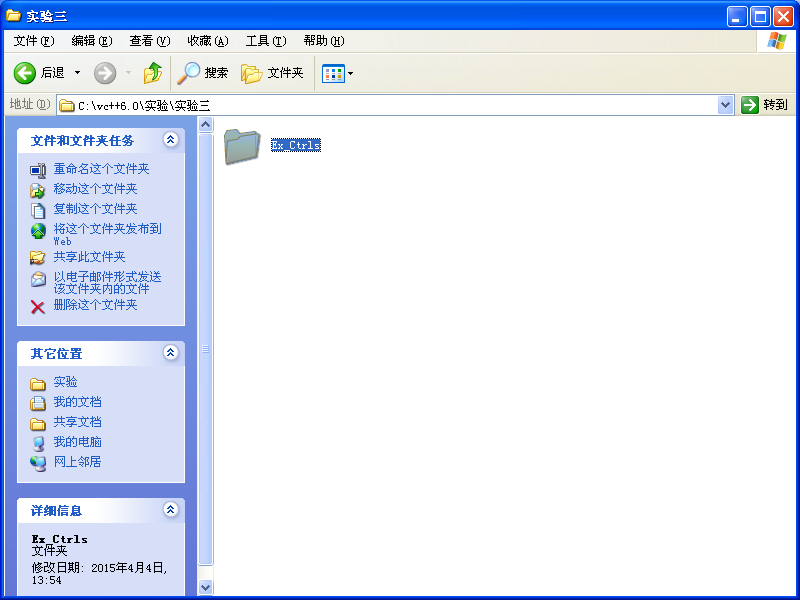  </p>
<h5 id="2-．启动Visual-C-6-0"><a href="#2-．启动Visual-C-6-0" class="headerlink" title="2**．启动Visual C++ 6.0**"></a><strong>2**</strong>．<strong>启动</strong>Visual C++ 6.0**</h5><p>启动Visual C++ 6.0系统。 </p>
<p>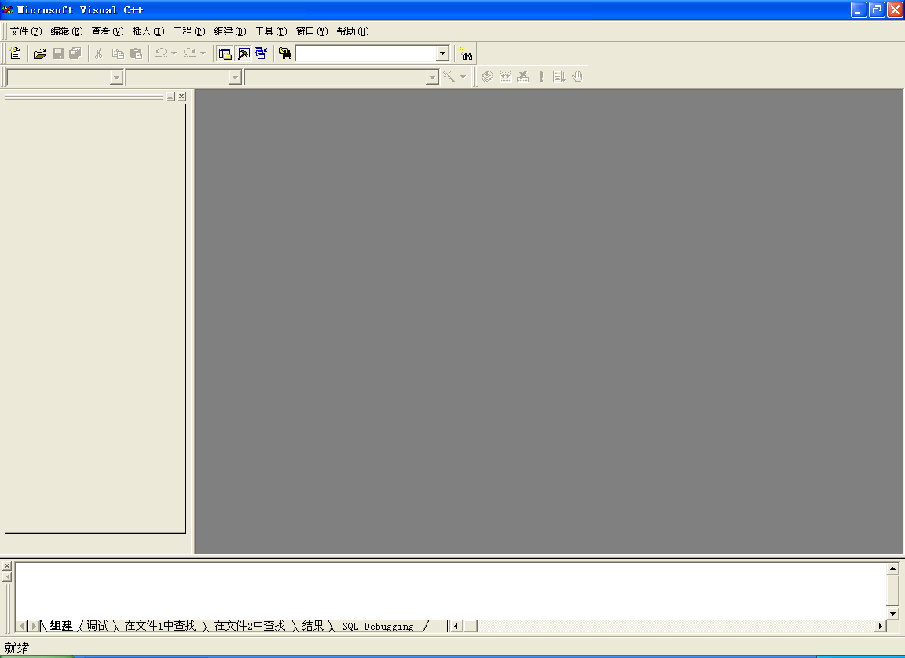</p>
<h5 id="3-．-创建并添加“学生基本信息”对话框"><a href="#3-．-创建并添加“学生基本信息”对话框" class="headerlink" title="3**．**创建并添加“学生基本信息”对话框"></a><strong>3**</strong>．**创建并添加“学生基本信息”对话框</h5><p>① 选择“文件”→“打开工作区”菜单，将“…\Visual C++程序\实验\实验3\Ex_Ctrls”文件夹中的Ex_Ctrls项目打开。<br>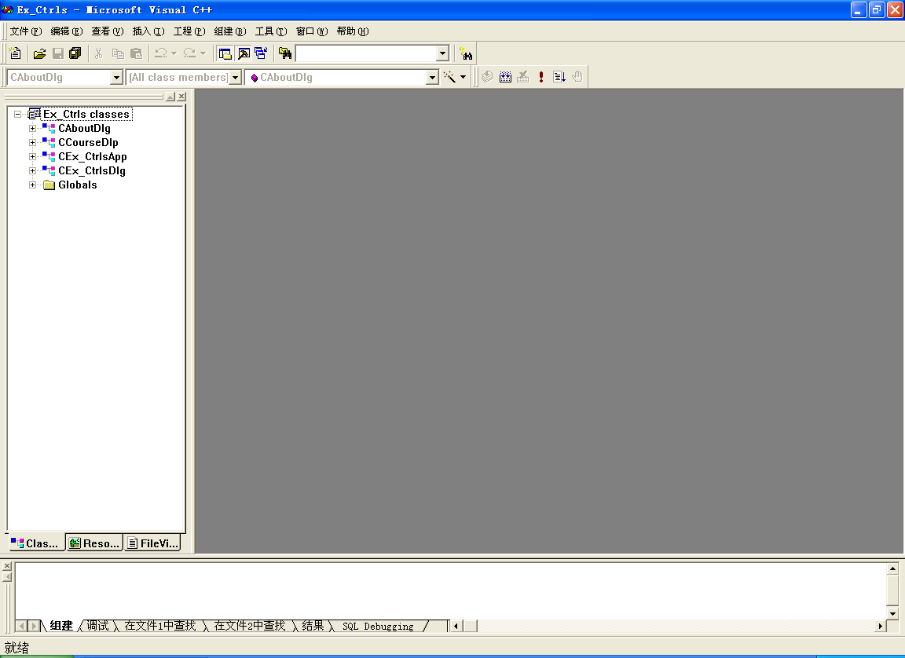</p>
<p>② 添加一个新的对话框资源，将ID号改为IDD_INPUT，标题为“学生成绩输入”，将对话框字体改为“宋体，9号”。将OK和Cancel按钮标题改为“确定”和“取消”。 </p>
<p>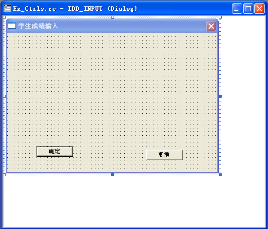</p>
<p>③ 调整对话框的大小，将“确定”和“取消”按钮移至对话框的下方，然后显示对话框网格。 </p>
<p></p>
<p>④ 参看图3.1，向对话框添加如表3.1所示的控件。 </p>
<p>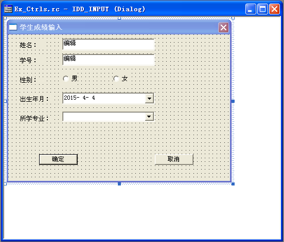</p>
<p>表<strong>3.1</strong>  学生基本信息对话框添加的控件</p>
<p>添加的控件</p>
<p><strong>ID</strong>号</p>
<p>标  题</p>
<p>其 他 属 性</p>
<p>编辑框</p>
<p>IDC_EDIT_NAME</p>
<p>——</p>
<p>默认</p>
<p>编辑框</p>
<p>IDC_EDIT_NO</p>
<p>——</p>
<p>默认</p>
<p>单选按钮</p>
<p>IDC_RADIO_MALE</p>
<p>男</p>
<p>默认</p>
<p>单选按钮</p>
<p>IDC_RADIO_FEMALE</p>
<p>女</p>
<p>默认</p>
<p>日期时间控件</p>
<p>IDC_DATETIMEPICKER1</p>
<p>——</p>
<p>默认</p>
<p>组合框控件</p>
<p>IDC_COMBO_SPECIAL</p>
<p>——</p>
<p>默认</p>
<p>⑤ 双击对话框模板空白处，为该对话框模板创建一个对话框类CInputDlg。 </p>
<p>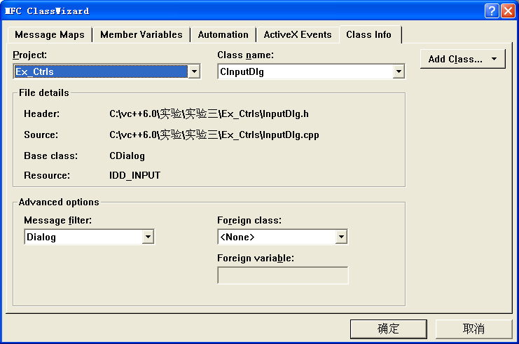</p>
<p>⑥ 在MFC ClassWizard的Member Variables页面中，确定Class name中是否已选择了CInputDlg，选中所需的控件ID号，双击鼠标或单击Add Variables按钮。依次为表3.2控件增加成员变量。 </p>
<p>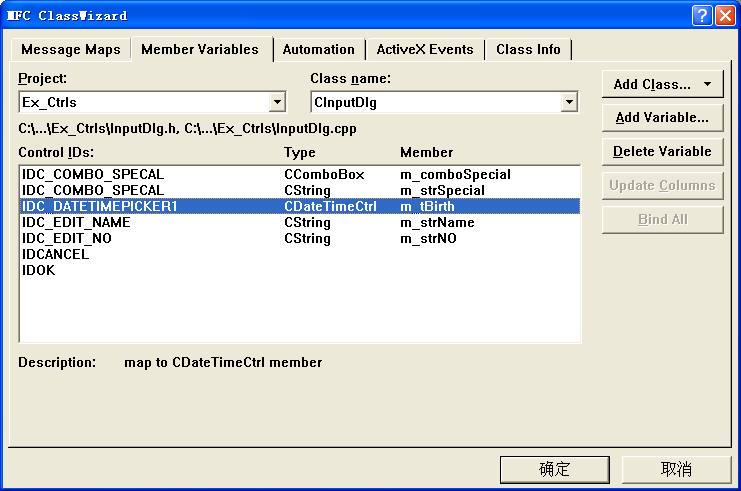</p>
<p>表<strong>3.2</strong>  控件变量</p>
<p>控件<strong>ID</strong>号</p>
<p>变 量 类 别</p>
<p>变 量 类 型</p>
<p>变  量  名</p>
<p>范围和大小</p>
<p>IDC_EDIT_NAME</p>
<p>Value</p>
<p>CString</p>
<p>m_strName</p>
<p>20</p>
<p>IDC_EDIT_NO</p>
<p>Value</p>
<p>CString</p>
<p>m_strNO</p>
<p>20</p>
<p>IDC_COMBO_SPECIAL</p>
<p>Value</p>
<p>CString</p>
<p>m_strSpecial</p>
<p>IDC_COMBO_SPECIAL</p>
<p>Control</p>
<p>CComboBox</p>
<p>m_comboSpecial</p>
<p>IDC_DATETIMEPICKER1</p>
<p>Control</p>
<p>CTime</p>
<p>m_tBirth</p>
<p>⑦ 在MFC ClassWizard的Messsage Maps页面中，为CInputDlg添加WM_INITDIALOG消息映射，并添加下列代码：</p>
<figure class="highlight cpp"><table><tr><td class="gutter"><pre><span class="line">1</span><br><span class="line">2</span><br><span class="line">3</span><br><span class="line">4</span><br><span class="line">5</span><br><span class="line">6</span><br><span class="line">7</span><br><span class="line">8</span><br><span class="line">9</span><br></pre></td><td class="code"><pre><span class="line"><span class="function">BOOL <span class="title">CInputDlg::OnInitDialog</span><span class="params">()</span></span></span><br><span class="line"><span class="function"></span>&#123;</span><br><span class="line">CheckRadioButton(IDC\_RADIO\_MALE,IDC\_RADIO\_FEMALE,IDC\_RADIO\_FEMALE);<span class="comment">// 默认的为女性。或者仿照课本112页用if…else语句。</span></span><br><span class="line">         m_comboSpecial.AddString( <span class="string">"机械工程及其自动化"</span> );</span><br><span class="line">         m_comboSpecial.AddString( <span class="string">"电气工程及其自动化"</span> );</span><br><span class="line">         m_strSpecial = <span class="string">"机械工程及其自动化"</span>;</span><br><span class="line">         m_tBirth=CTime(<span class="number">1990</span>,<span class="number">1</span>,<span class="number">1</span>,<span class="number">0</span>,<span class="number">0</span>,<span class="number">0</span>);</span><br><span class="line">         UpdateData(FALSE);</span><br><span class="line">&#125;</span><br></pre></td></tr></table></figure>
<p>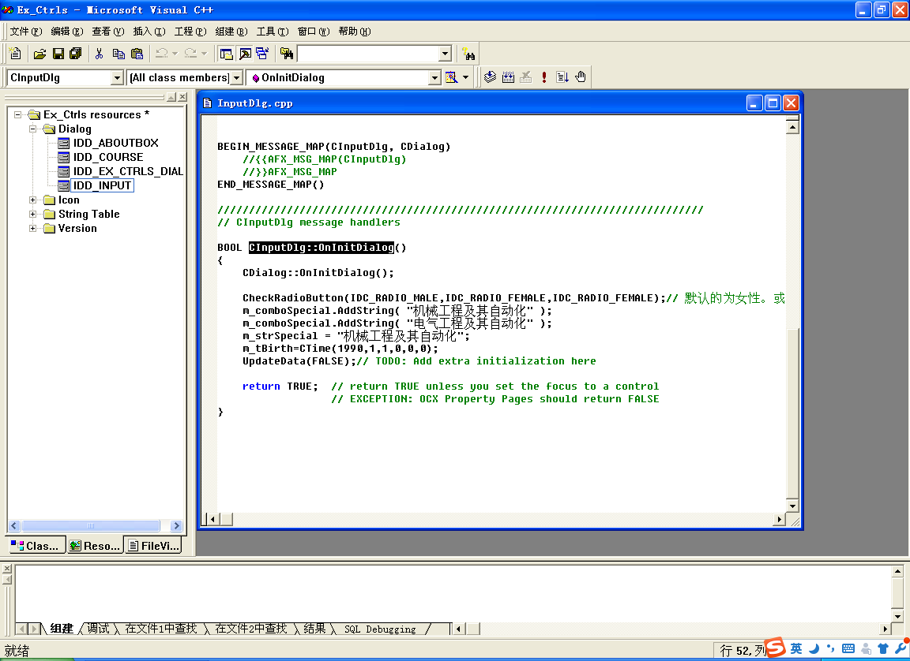</p>
<p>⑧ 用MFC ClassWizard为CInputDlg增加IDC_SPIN_S1控件的UDN_DELTAPOS消息映射，并添加下列代码：</p>
<figure class="highlight cpp"><table><tr><td class="gutter"><pre><span class="line">1</span><br><span class="line">2</span><br><span class="line">3</span><br><span class="line">4</span><br><span class="line">5</span><br><span class="line">6</span><br><span class="line">7</span><br><span class="line">8</span><br><span class="line">9</span><br><span class="line">10</span><br></pre></td><td class="code"><pre><span class="line"><span class="function"><span class="keyword">void</span> <span class="title">CInputDlg::OnDeltaposSpinS1</span><span class="params">(NMHDR* pNMHDR, LRESULT* pResult)</span></span></span><br><span class="line"><span class="function"></span>&#123;</span><br><span class="line">         NM\_UPDOWN* pNMUpDown = (NM\_UPDOWN*)pNMHDR;</span><br><span class="line">         UpdateData(TRUE);                                <span class="comment">// 将控件的内容保存到变量中</span></span><br><span class="line">         m_fScore1 += (<span class="keyword">float</span>)pNMUpDown-&gt;iDelta * <span class="number">0.5f</span>;</span><br><span class="line">         <span class="keyword">if</span> (m\_fScore1&lt;<span class="number">0.0</span>) m\_fScore1 = <span class="number">0.0f</span>;</span><br><span class="line">         <span class="keyword">if</span> (m\_fScore1&gt;<span class="number">100.0</span>) m\_fScore1 = <span class="number">100.0f</span>;</span><br><span class="line">         UpdateData(FALSE);                     <span class="comment">// 将变量的内容显示在控件中</span></span><br><span class="line">         *pResult = <span class="number">0</span>;</span><br><span class="line">&#125;</span><br></pre></td></tr></table></figure>
<p>改为：（或者在初始化函数中修改m_bMale=0） 模仿课本111页，为 CInputDlg类添加BOOL类型的成员变量m_bMale（或手动在.h文件中添加BOOL m_bMale;），并在CInputDlg类设置该变量的初始值。如下</p>
<figure class="highlight cpp"><table><tr><td class="gutter"><pre><span class="line">1</span><br><span class="line">2</span><br><span class="line">3</span><br><span class="line">4</span><br><span class="line">5</span><br><span class="line">6</span><br><span class="line">7</span><br><span class="line">8</span><br><span class="line">9</span><br><span class="line">10</span><br><span class="line">11</span><br><span class="line">12</span><br></pre></td><td class="code"><pre><span class="line">CInputDlg::CInputDlg(CWnd* pParent <span class="comment">/*=NULL*/</span>)</span><br><span class="line">         : CDialog(CInputDlg::IDD, pParent)</span><br><span class="line">&#123;</span><br><span class="line">         m_bMale=FALSE;<span class="comment">//或者=0，表示默认选择女</span></span><br><span class="line">         <span class="comment">//&#123; &#123;AFX\_DATA\_INIT(CInputDlg)</span></span><br><span class="line">         m\_strName = \_T(<span class="string">""</span>);</span><br><span class="line">         m\_strSpecial = \_T(<span class="string">""</span>);</span><br><span class="line">         m\_strNo = \_T(<span class="string">""</span>);</span><br><span class="line">         m_tBirth = <span class="number">0</span>;</span><br><span class="line">         <span class="comment">//&#125;&#125;AFX\_DATA\_INIT</span></span><br><span class="line"></span><br><span class="line">&#125;</span><br></pre></td></tr></table></figure>
<p>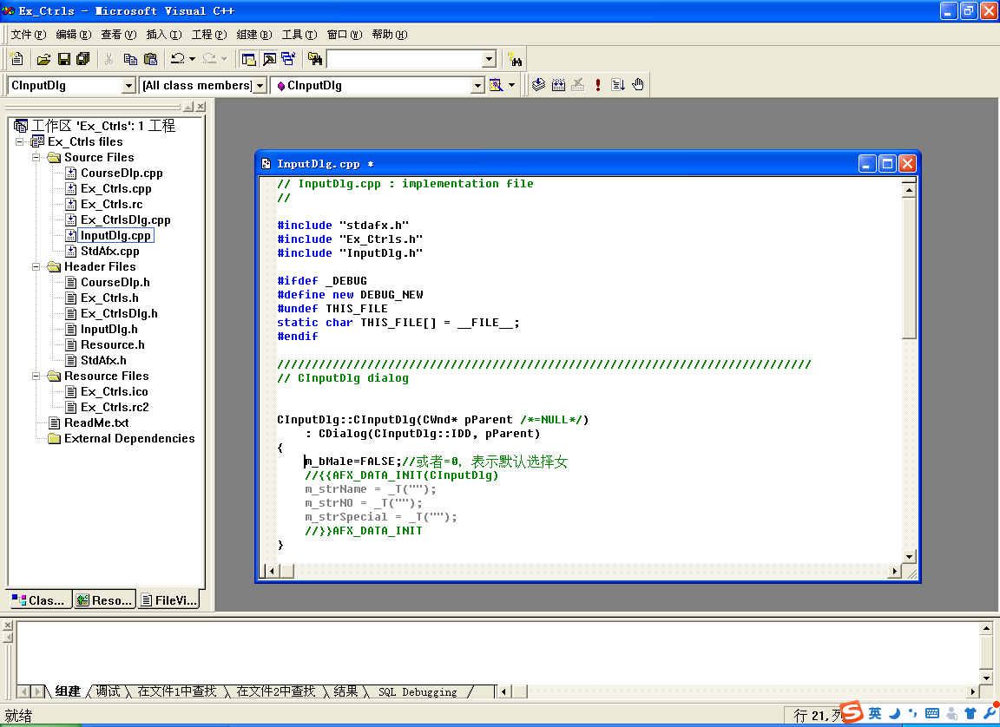</p>
<p>⑨ 打开IDD_EX_CTRLS_DIALOG对话框资源，在 “课程信息”按钮下方添加一个“学生基本信息”按钮，并将ID号设为IDC_BUTTON_STUINFO。 </p>
<p>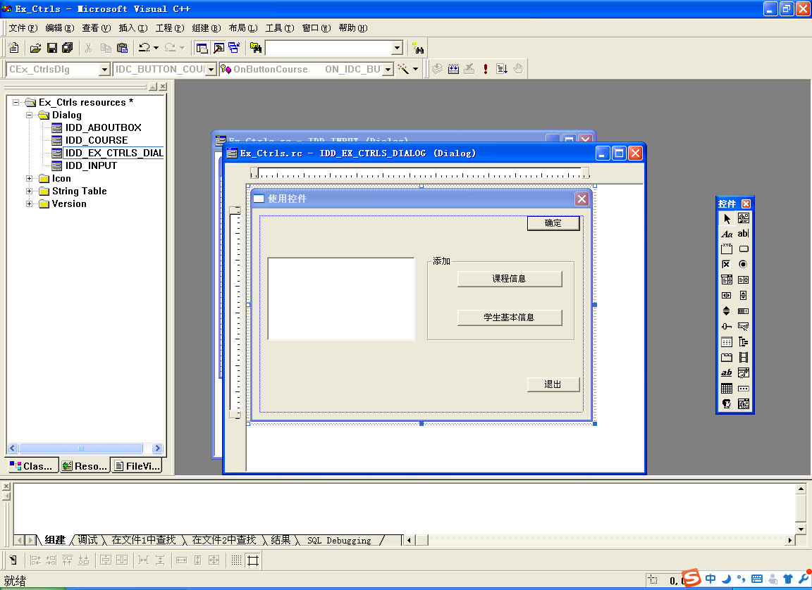</p>
<p>⑩ 用MFC ClassWizard为按钮IDC_BUTTON_STUINFO添加BN_CLICKED消息映射，并添加下列代码： </p>
<p>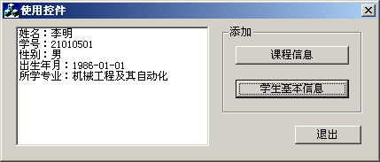</p>
<figure class="highlight cpp"><table><tr><td class="gutter"><pre><span class="line">1</span><br><span class="line">2</span><br><span class="line">3</span><br><span class="line">4</span><br><span class="line">5</span><br><span class="line">6</span><br><span class="line">7</span><br><span class="line">8</span><br><span class="line">9</span><br><span class="line">10</span><br><span class="line">11</span><br><span class="line">12</span><br><span class="line">13</span><br><span class="line">14</span><br></pre></td><td class="code"><pre><span class="line"><span class="function"><span class="keyword">void</span> <span class="title">CEx_CtrlsDlg::OnButtonStuinfo</span><span class="params">()</span></span></span><br><span class="line"><span class="function"></span>&#123;</span><br><span class="line">         CInputDlgdlg;</span><br><span class="line">         <span class="keyword">if</span> (IDOK != dlg.DoModal()) <span class="keyword">return</span>;</span><br><span class="line">         <span class="keyword">while</span>(m_List.GetCount()!=<span class="number">0</span>)        </span><br><span class="line">              m_List.DeleteString(<span class="number">0</span>);</span><br><span class="line">         <span class="function">CString <span class="title">strSex</span><span class="params">(<span class="string">"女"</span>)</span></span>;</span><br><span class="line">         <span class="keyword">if</span> (dlg.m_bMale) strSex = <span class="string">"男"</span>;</span><br><span class="line">         m\_List.AddString( <span class="string">"姓名："</span>+dlg.m\_strName);</span><br><span class="line">         m\_List.AddString( <span class="string">"学号："</span>+dlg.m\_strNo);</span><br><span class="line">         m_List.AddString( <span class="string">"性别："</span>+strSex);</span><br><span class="line">         m\_List.AddString( <span class="string">"出生年月："</span>+dlg.m\_tBirth.Format(<span class="string">"%Y-%m-%d"</span>));</span><br><span class="line">         m\_List.AddString( <span class="string">"所学专业："</span>+dlg.m\_strSpecial);</span><br><span class="line">&#125;</span><br></pre></td></tr></table></figure>
<p>在Ex_CtrlsDlg.cpp文件的前面添加CStuInfoDlg类的头文件包含：</p>
<figure class="highlight cpp"><table><tr><td class="gutter"><pre><span class="line">1</span><br><span class="line">2</span><br></pre></td><td class="code"><pre><span class="line"><span class="meta">#<span class="meta-keyword">include</span> <span class="meta-string">"CourseDlg.h"</span></span></span><br><span class="line"><span class="meta">#<span class="meta-keyword">include</span> <span class="meta-string">"StuInfoDlg.h"</span></span></span><br></pre></td></tr></table></figure>
<p>编译运行并测试。结果如图3.3所示。 图3.3  学生基本信息添加后的结果</p>
<h5 id="4-．-改变对话框背景颜色"><a href="#4-．-改变对话框背景颜色" class="headerlink" title="4**．**改变对话框背景颜色"></a><strong>4**</strong>．**改变对话框背景颜色</h5><p>① 将项目工作区窗口切换到ResourceView页面，打开IDD_EX_CTRLS_DIALOG对话框资源。 ② 打开对话框网格，参看图3.2的控件布局，为对话框添加如表3.3所示的一些控件。 表<strong>3.3</strong>  添加的控件</p>
<p>添加的控件</p>
<p><strong>ID</strong>号</p>
<p>标    题</p>
<p>其 他 属 性</p>
<p>垂直滚动条</p>
<p>IDC_SCROLLBAR_RED</p>
<p>——</p>
<p>默认</p>
<p>滑动条(绿色)</p>
<p>IDC_SLIDER_GREEN</p>
<p>——</p>
<p>方位为Vertical, 其他默认</p>
<p>滑动条(蓝色)</p>
<p>IDC_SLIDER_BLUE</p>
<p>——</p>
<p>方位为Vertical, 其他默认</p>
<p>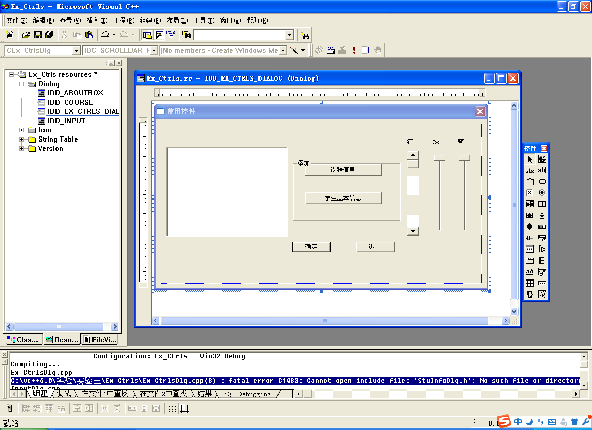 </p>
<p>③ 用MFC ClassWizard为表3.4控件添加成员变量。 表<strong>3.4</strong>  控件变量</p>
<p>控件<strong>ID</strong>号</p>
<p>变 量 类 别</p>
<p>变 量 类 型</p>
<p>变  量  名</p>
<p>范围和大小</p>
<p>IDC_SCROLLBAR_RED</p>
<p>Control</p>
<p>CScrollBar</p>
<p>m_scrollRed</p>
<p>——</p>
<p>IDC_SLIDER_GREEN</p>
<p>Control</p>
<p>CSliderCtrl</p>
<p>m_sliderGreen</p>
<p>——</p>
<p>IDC_SLIDER_GREEN</p>
<p>Value</p>
<p>int</p>
<p>m_nGreen</p>
<p>IDC_SLIDER_BLUE</p>
<p>Control</p>
<p>CSliderCtrl</p>
<p>m_sliderBlue</p>
<p>——</p>
<p>IDC_SLIDER_BLUE</p>
<p>Value</p>
<p>int</p>
<p>m_nBlue</p>
<p>——</p>
<p>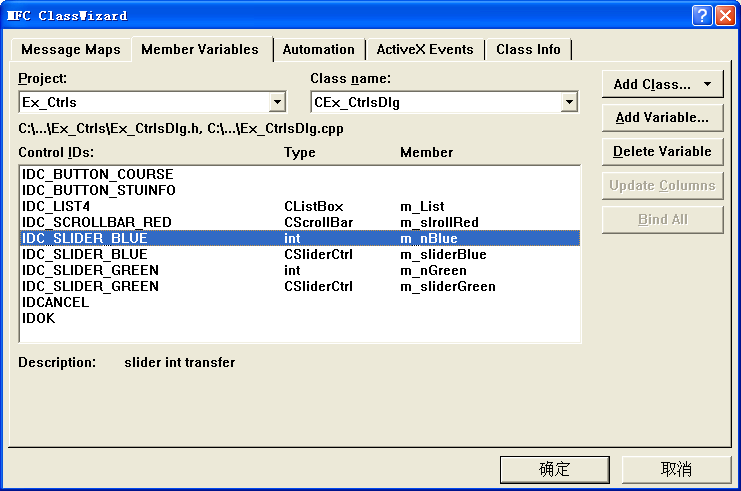<br>④ 为CEx_CtrlsDlg类添加两个成员变量，一个是int型m_nRed，用来设置颜色R、G、B中的红色分量，另一个是画刷CBrush类对象m_Brush，用来设置对话框背景所需要的画刷。 </p>
<p>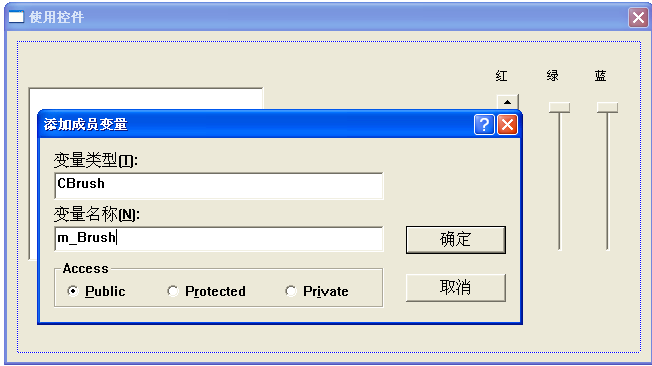 </p>
<p>⑤ 在CEx_CtrlsDlg::OnInitDialog函数中添加下列代码：</p>
<figure class="highlight cpp"><table><tr><td class="gutter"><pre><span class="line">1</span><br><span class="line">2</span><br><span class="line">3</span><br><span class="line">4</span><br><span class="line">5</span><br><span class="line">6</span><br><span class="line">7</span><br><span class="line">8</span><br><span class="line">9</span><br><span class="line">10</span><br><span class="line">11</span><br></pre></td><td class="code"><pre><span class="line"><span class="function">BOOL <span class="title">CEx_CtrlsDlg::OnInitDialog</span><span class="params">()</span></span></span><br><span class="line"><span class="function"></span>&#123;</span><br><span class="line">         …</span><br><span class="line">         m_scrollRed.SetScrollRange(<span class="number">0</span>, <span class="number">255</span>);</span><br><span class="line">         m_sliderBlue.SetRange(<span class="number">0</span>, <span class="number">255</span>);</span><br><span class="line">         m_sliderGreen.SetRange(<span class="number">0</span>, <span class="number">255</span>);</span><br><span class="line">         m\_nBlue = m\_nGreen = m_nRed = <span class="number">192</span>;</span><br><span class="line">         UpdateData( FALSE );</span><br><span class="line">         m\_scrollRed.SetScrollPos(m\_nRed);</span><br><span class="line">         <span class="keyword">return</span> TRUE;  <span class="comment">// return TRUE unless you set the focus to a control</span></span><br><span class="line">&#125;</span><br></pre></td></tr></table></figure>
<p>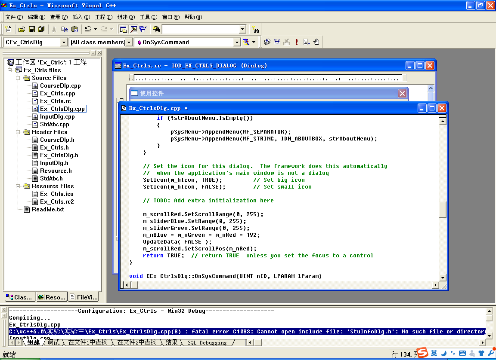<br>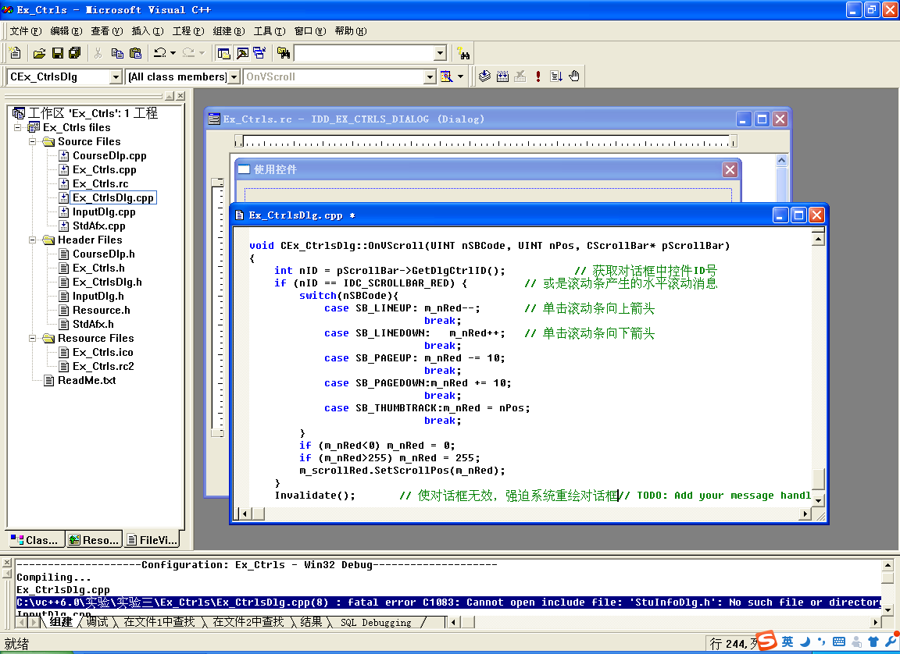<br>⑥ 用MFC ClassWizard为CEx_CtrlsDlg类映射WM_VSCROLL消息，并添加下列代码：</p>
<figure class="highlight cpp"><table><tr><td class="gutter"><pre><span class="line">1</span><br><span class="line">2</span><br><span class="line">3</span><br><span class="line">4</span><br><span class="line">5</span><br><span class="line">6</span><br><span class="line">7</span><br><span class="line">8</span><br><span class="line">9</span><br><span class="line">10</span><br><span class="line">11</span><br><span class="line">12</span><br><span class="line">13</span><br><span class="line">14</span><br><span class="line">15</span><br><span class="line">16</span><br><span class="line">17</span><br><span class="line">18</span><br><span class="line">19</span><br><span class="line">20</span><br><span class="line">21</span><br><span class="line">22</span><br><span class="line">23</span><br><span class="line">24</span><br><span class="line">25</span><br></pre></td><td class="code"><pre><span class="line"><span class="function"><span class="keyword">void</span> <span class="title">CEx_CtrlsDlg::OnVScroll</span><span class="params">(UINT nSBCode, UINT nPos, CScrollBar* pScrollBar)</span></span></span><br><span class="line"><span class="function"></span>&#123;</span><br><span class="line">         <span class="keyword">int</span> nID = pScrollBar-&gt;GetDlgCtrlID();                     <span class="comment">// 获取对话框中控件ID号</span></span><br><span class="line">         <span class="keyword">if</span> (nID == IDC\_SCROLLBAR\_RED) &#123;                   <span class="comment">// 或是滚动条产生的水平滚动消息</span></span><br><span class="line">                  <span class="keyword">switch</span>(nSBCode)&#123;</span><br><span class="line">                           <span class="keyword">case</span> SB\_LINEUP:       m\_nRed--;                   <span class="comment">// 单击滚动条向上箭</span></span><br><span class="line">                                                               <span class="keyword">break</span>;</span><br><span class="line">                           <span class="keyword">case</span> SB\_LINEDOWN:         m\_nRed++;         <span class="comment">// 单击滚动条向下箭头</span></span><br><span class="line">                                                               <span class="keyword">break</span>;</span><br><span class="line">                           <span class="keyword">case</span> SB\_PAGEUP:      m\_nRed -= <span class="number">10</span>;  </span><br><span class="line">                                                               <span class="keyword">break</span>;</span><br><span class="line">                           <span class="keyword">case</span> SB\_PAGEDOWN:m\_nRed += <span class="number">10</span>; </span><br><span class="line">                                                               <span class="keyword">break</span>;</span><br><span class="line">                           <span class="keyword">case</span> SB\_THUMBTRACK:m\_nRed = nPos;   </span><br><span class="line">                                                               <span class="keyword">break</span>;</span><br><span class="line"></span><br><span class="line">                  &#125;</span><br><span class="line">                  <span class="keyword">if</span> (m\_nRed&lt;<span class="number">0</span>) m\_nRed = <span class="number">0</span>;</span><br><span class="line">                  <span class="keyword">if</span> (m\_nRed&gt;<span class="number">255</span>) m\_nRed = <span class="number">255</span>;</span><br><span class="line">                  m\_scrollRed.SetScrollPos(m\_nRed);</span><br><span class="line">         &#125;</span><br><span class="line">         Invalidate();                  <span class="comment">// 使对话框无效，强迫系统重绘对话框</span></span><br><span class="line">                  CDialog::OnVScroll(nSBCode, nPos, pScrollBar);</span><br><span class="line"></span><br><span class="line">&#125;</span><br></pre></td></tr></table></figure>
<p>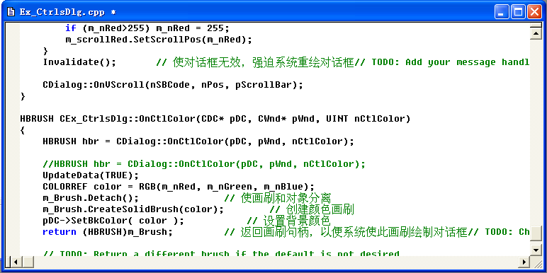 </p>
<figure class="highlight cpp"><table><tr><td class="gutter"><pre><span class="line">1</span><br><span class="line">2</span><br><span class="line">3</span><br><span class="line">4</span><br><span class="line">5</span><br><span class="line">6</span><br><span class="line">7</span><br><span class="line">8</span><br><span class="line">9</span><br><span class="line">10</span><br><span class="line">11</span><br><span class="line">12</span><br></pre></td><td class="code"><pre><span class="line">⑦ 用MFC ClassWizard为CEx\_CtrlsDlg类映射WM\_CTLCOLOR消息，并添加下列代码：</span><br><span class="line"></span><br><span class="line"><span class="function">HBRUSH <span class="title">CEx_CtrlsDlg::OnCtlColor</span><span class="params">(CDC* pDC, CWnd* pWnd, UINT nCtlColor)</span></span></span><br><span class="line"><span class="function"></span>&#123;</span><br><span class="line">         <span class="comment">//HBRUSH hbr = CDialog::OnCtlColor(pDC, pWnd, nCtlColor);</span></span><br><span class="line">         UpdateData(TRUE);</span><br><span class="line">         COLORREF color = RGB(m\_nRed, m\_nGreen, m_nBlue);</span><br><span class="line">         m_Brush.Detach();                                  <span class="comment">// 使画刷和对象分离</span></span><br><span class="line">         m_Brush.CreateSolidBrush(color);                   <span class="comment">// 创建颜色画刷</span></span><br><span class="line">         pDC-&gt;SetBkColor( color );                    <span class="comment">// 设置背景颜色</span></span><br><span class="line">         <span class="keyword">return</span> (HBRUSH)m_Brush;                   <span class="comment">// 返回画刷句柄，以便系统使此画刷绘制对话框</span></span><br><span class="line">&#125;</span><br></pre></td></tr></table></figure>

<p>⑧ 编译运行并测试。</p>
<h5 id="5-．-写出实验报告"><a href="#5-．-写出实验报告" class="headerlink" title="5**．**写出实验报告"></a><strong>5**</strong>．**写出实验报告</h5><p>分析上述运行结果以及思考与练习，写出实验报告。</p>
<h4 id="思考与练习"><a href="#思考与练习" class="headerlink" title="思考与练习"></a>思考与练习</h4><p>（1）若将控制绿色和蓝色颜色分量的滑动条全部换成滚动条，则代码应如何修改？ </p>
<p>（2）若将CEx_CtrlsDlg对话框中的列表框换成静态文本，并用于显示信息，则应如何实现？ </p>
<p>（3）模仿课本112页为CInputDlg的IDOK添加BN_CLICKED消息映射。 <strong>实验结果分析</strong> 知道了控件的基本操作，添加控件和修改代码，调整控件位置。</p>
 
      <!-- reward -->
      
    </div>
    

    <!-- copyright -->
    
    <div class="declare">
      <ul class="post-copyright">
        <li>
          <i class="ri-copyright-line"></i>
          <strong>版权声明： </strong>
          本博客所有文章，未经许可，任何单位及个人不得做营利性使用！如有侵权请联系作者。
        </li>
      </ul>
    </div>
    
    <footer class="article-footer">
       
  <ul class="article-tag-list" itemprop="keywords"><li class="article-tag-list-item"><a class="article-tag-list-link" href="/tags/vc-6-0/" rel="tag">vc++6.0</a></li></ul>

    </footer>
  </div>

   
  <nav class="article-nav">
    
      <a href="/2016/03/vc++6.0-%E5%88%97%E8%A1%A8%E6%8E%A7%E4%BB%B6%E5%92%8C%E6%A0%91%E6%8E%A7%E4%BB%B6/" class="article-nav-link">
        <strong class="article-nav-caption">上一篇</strong>
        <div class="article-nav-title">
          
            vc++6.0-列表控件和树控件
          
        </div>
      </a>
    
    
      <a href="/2016/03/vc++6.0-%E5%B8%B8%E7%94%A8%E6%8E%A7%E4%BB%B61/" class="article-nav-link">
        <strong class="article-nav-caption">下一篇</strong>
        <div class="article-nav-title">vc++6.0-常用控件1</div>
      </a>
    
  </nav>

  
     
</article>

</section>
      <footer class="footer">
  <div class="outer">
    <ul>
      <li>
        Copyrights &copy;
        2015-2020
        <i class="ri-heart-fill heart_icon"></i> Tianye Zhai
      </li>
    </ul>
    <ul>
      <li>
        
      </li>
    </ul>
    <ul>
      <li>
        
      </li>
    </ul>
    <ul>
      
    </ul>
    <ul>
      <li>
        <!-- cnzz统计 -->
        
      </li>
    </ul>
  </div>
</footer>
      <div class="float_btns">
        <div class="totop" id="totop">
  <i class="ri-arrow-up-line"></i>
</div>

<div class="todark" id="todark">
  <i class="ri-moon-line"></i>
</div>

      </div>
    </main>
    <aside class="sidebar on">
      <button class="navbar-toggle"></button>
<nav class="navbar">
  
  <div class="logo">
    <a href="/"></a>
  </div>
  
  <ul class="nav nav-main">
    
    <li class="nav-item">
      <a class="nav-item-link" href="/">主页</a>
    </li>
    
    <li class="nav-item">
      <a class="nav-item-link" href="/archives">归档</a>
    </li>
    
    <li class="nav-item">
      <a class="nav-item-link" href="/categories">分类</a>
    </li>
    
    <li class="nav-item">
      <a class="nav-item-link" href="/tags">标签</a>
    </li>
    
    <li class="nav-item">
      <a class="nav-item-link" href="/about">关于</a>
    </li>
    
  </ul>
</nav>
<nav class="navbar navbar-bottom">
  <ul class="nav">
    <li class="nav-item">
      
      <a class="nav-item-link nav-item-search"  title="搜索">
        <i class="ri-search-line"></i>
      </a>
      
      
      <a class="nav-item-link" target="_blank" href="/atom.xml" title="RSS Feed">
        <i class="ri-rss-line"></i>
      </a>
      
    </li>
  </ul>
</nav>
<div class="search-form-wrap">
  <div class="local-search local-search-plugin">
  <input type="search" id="local-search-input" class="local-search-input" placeholder="Search...">
  <div id="local-search-result" class="local-search-result"></div>
</div>
</div>
    </aside>
    <script>
      if (window.matchMedia("(max-width: 768px)").matches) {
        document.querySelector('.content').classList.remove('on');
        document.querySelector('.sidebar').classList.remove('on');
      }
    </script>
    <div id="mask"></div>

<!-- #reward -->
<div id="reward">
  <span class="close"><i class="ri-close-line"></i></span>
  <p class="reward-p"><i class="ri-cup-line"></i>请我喝杯咖啡吧~</p>
  <div class="reward-box">
    
    
  </div>
</div>
    
<script src="/js/jquery-2.0.3.min.js"></script>


<script src="/js/lazyload.min.js"></script>


<!-- Tocbot -->


<script src="/js/tocbot.min.js"></script>

<script>
  
  if(document.getElementsByClassName("tocbot").length !== 0){
    tocbot.init({
      tocSelector: '.tocbot',
      contentSelector: '.article-entry',
      headingSelector: 'h1, h2, h3, h4, h5, h6',
      hasInnerContainers: true,
      scrollSmooth: true,
      scrollContainer: 'main',
      positionFixedSelector: '.tocbot',
      positionFixedClass: 'is-position-fixed',
      fixedSidebarOffset: 'auto'
    });
  }
</script>

<script src="/comm/jquery.modal.min.js"></script>
<link rel="stylesheet" href="/comm/jquery.modal.min.css">
<script src="/comm/jquery.justifiedGallery.min.js"></script>

<script src="/dist/main.js"></script>

<!-- ImageViewer -->

<!-- Root element of PhotoSwipe. Must have class pswp. -->
<div class="pswp" tabindex="-1" role="dialog" aria-hidden="true">

    <!-- Background of PhotoSwipe. 
         It's a separate element as animating opacity is faster than rgba(). -->
    <div class="pswp__bg"></div>

    <!-- Slides wrapper with overflow:hidden. -->
    <div class="pswp__scroll-wrap">

        <!-- Container that holds slides. 
            PhotoSwipe keeps only 3 of them in the DOM to save memory.
            Don't modify these 3 pswp__item elements, data is added later on. -->
        <div class="pswp__container">
            <div class="pswp__item"></div>
            <div class="pswp__item"></div>
            <div class="pswp__item"></div>
        </div>

        <!-- Default (PhotoSwipeUI_Default) interface on top of sliding area. Can be changed. -->
        <div class="pswp__ui pswp__ui--hidden">

            <div class="pswp__top-bar">

                <!--  Controls are self-explanatory. Order can be changed. -->

                <div class="pswp__counter"></div>

                <button class="pswp__button pswp__button--close" title="Close (Esc)"></button>

                <button class="pswp__button pswp__button--share" style="display:none" title="Share"></button>

                <button class="pswp__button pswp__button--fs" title="Toggle fullscreen"></button>

                <button class="pswp__button pswp__button--zoom" title="Zoom in/out"></button>

                <!-- Preloader demo http://codepen.io/dimsemenov/pen/yyBWoR -->
                <!-- element will get class pswp__preloader--active when preloader is running -->
                <div class="pswp__preloader">
                    <div class="pswp__preloader__icn">
                        <div class="pswp__preloader__cut">
                            <div class="pswp__preloader__donut"></div>
                        </div>
                    </div>
                </div>
            </div>

            <div class="pswp__share-modal pswp__share-modal--hidden pswp__single-tap">
                <div class="pswp__share-tooltip"></div>
            </div>

            <button class="pswp__button pswp__button--arrow--left" title="Previous (arrow left)">
            </button>

            <button class="pswp__button pswp__button--arrow--right" title="Next (arrow right)">
            </button>

            <div class="pswp__caption">
                <div class="pswp__caption__center"></div>
            </div>

        </div>

    </div>

</div>

<link rel="stylesheet" href="/comm/photoswipe_dist/photoswipe.css">
<link rel="stylesheet" href="/comm/photoswipe_dist/default-skin/default-skin.css">
<script src="/comm/photoswipe_dist/photoswipe.min.js"></script>
<script src="/comm/photoswipe_dist/photoswipe-ui-default.min.js"></script>

<script>
    function viewer_init() {
        let pswpElement = document.querySelectorAll('.pswp')[0];
        let $imgArr = document.querySelectorAll(('.article-entry img:not(.reward-img)'))

        $imgArr.forEach(($em, i) => {
            $em.onclick = () => {
                // slider展开状态
                // todo: 这样不好，后面改成状态
                if (document.querySelector('.left-col.show')) return
                let items = []
                $imgArr.forEach(($em2, i2) => {
                    let img = $em2.getAttribute('data-idx', i2)
                    let src = $em2.getAttribute('data-target') || $em2.getAttribute('src')
                    let title = $em2.getAttribute('alt')
                    // 获得原图尺寸
                    const image = new Image()
                    image.src = src
                    items.push({
                        src: src,
                        w: image.width || $em2.width,
                        h: image.height || $em2.height,
                        title: title
                    })
                })
                var gallery = new PhotoSwipe(pswpElement, PhotoSwipeUI_Default, items, {
                    index: parseInt(i)
                });
                gallery.init()
            }
        })
    }
    viewer_init()
</script>

<!-- MathJax -->

<!-- Katex -->

<!-- busuanzi  -->

<!-- ClickLove -->

<!-- ClickBoom1 -->

<!-- ClickBoom2 -->


<script src="/js/clickBoom2.js"></script>


<!-- CodeCopy -->


<link rel="stylesheet" href="/css/clipboard.css">

<script src="/comm/clipboard.min.js"></script>
<script>
  function wait(callback, seconds) {
    var timelag = null;
    timelag = window.setTimeout(callback, seconds);
  }
  !function (e, t, a) {
    var initCopyCode = function(){
      var copyHtml = '';
      copyHtml += '<button class="btn-copy" data-clipboard-snippet="">';
      copyHtml += '<i class="ri-file-copy-2-line"></i><span>COPY</span>';
      copyHtml += '</button>';
      $(".highlight .code pre").before(copyHtml);
      $(".article pre code").before(copyHtml);
      var clipboard = new ClipboardJS('.btn-copy', {
        target: function(trigger) {
          return trigger.nextElementSibling;
        }
      });
      clipboard.on('success', function(e) {
        let $btn = $(e.trigger);
        $btn.addClass('copied');
        let $icon = $($btn.find('i'));
        $icon.removeClass('ri-file-copy-2-line');
        $icon.addClass('ri-checkbox-circle-line');
        let $span = $($btn.find('span'));
        $span[0].innerText = 'COPIED';
        
        wait(function () { // 等待两秒钟后恢复
          $icon.removeClass('ri-checkbox-circle-line');
          $icon.addClass('ri-file-copy-2-line');
          $span[0].innerText = 'COPY';
        }, 2000);
      });
      clipboard.on('error', function(e) {
        e.clearSelection();
        let $btn = $(e.trigger);
        $btn.addClass('copy-failed');
        let $icon = $($btn.find('i'));
        $icon.removeClass('ri-file-copy-2-line');
        $icon.addClass('ri-time-line');
        let $span = $($btn.find('span'));
        $span[0].innerText = 'COPY FAILED';
        
        wait(function () { // 等待两秒钟后恢复
          $icon.removeClass('ri-time-line');
          $icon.addClass('ri-file-copy-2-line');
          $span[0].innerText = 'COPY';
        }, 2000);
      });
    }
    initCopyCode();
  }(window, document);
</script>


<!-- CanvasBackground -->


    
  </div>
</body>

</html>